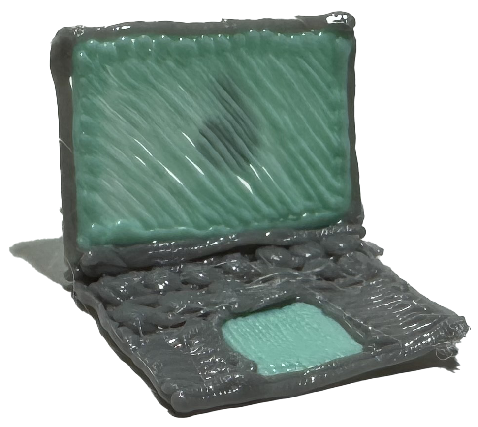

Extend Yourself - 3Doodler Start+: Design a Uniform
 Create Another Uniform
Create Another Uniform
Choose another career to create a new uniform. This can even be a career that doesn’t exist yet! Think about where someone in the future might work and design a uniform for them. For example, What kind of uniform would a Mars colony mechanic need? Design and create the uniform using the 3Doodler pen.

Design a Tool or Accessory
In addition to uniforms, many jobs use special tools to make their jobs easier. Design a tool for your career and create a model of the tool using the 3Doodler pen. Think about how the tool or accessory helps someone do their job better. For example, consider creating a laptop computer for a computer programmer so they can do their work wherever they go.
